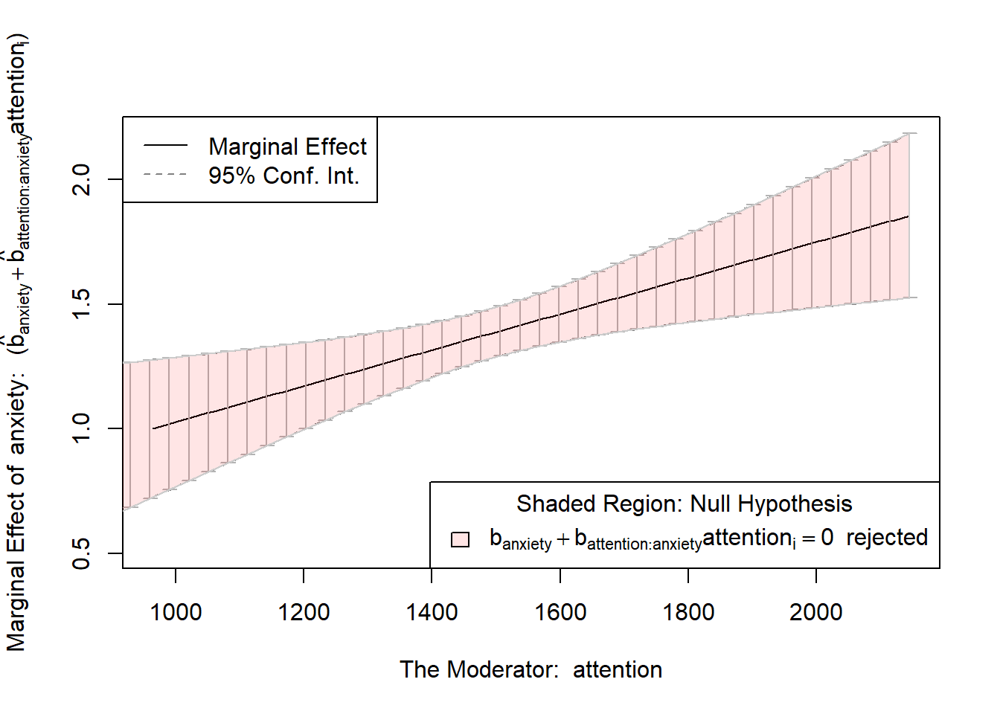

practical5_data <- read.csv("practical5_data.csv")Practical 5 Moderation Analysis
How to approach this practical session
- Have RStudio open and ready to use.
- Be sure to read the contextual information and instructions carefully. This information is necessary to complete the tasks.
- Complete the tasks as you go along - they are labelled “Task”.
- Some of the code you need will be completed, some will be partially completed, some you will need to do yourself. You can copy code examples from this page by clicking on the clipboard icon which appears when you hover over the code examples.
- Buttons to press in your keyboard are shown like this:
Ctrl + S orCmd + S . - Menu items to click in R Studio are shown like this:
File -> Save . Panes or Tabs in R Studio are also shown like this:Environment . - On this page, boxes with a drop down arrow can be collapsed to hide the information inside them. You can also click on the arrow to expand the section.
Download the data for this practical
For this session you will need to download the following dataset: practical5_data.csv
Right click and select
Reminder: Importing data into R
To import data into R, you can use the a command that relates to the type of data you are importing. For example, to import the data in the file practical5_data.csv, you would use the following command:
You can also use the menu to import data. To do this, click on the
Import the data
Task
Import the data from the file practical5_data.csv into R. Save the data in a variable called practical5_data.
Check the data has been imported correctly
Research Scenario
A psychologist is interested in the relationship between anxiety and depression. They believe that the relationship between anxiety and depression is moderated by attention. They ran an study which measured anxiety, attention and depression in 100 participants. The data from this study is in the file practical5_data.csv. The anxiety and depression scores are from standardised measures. The attention scores are from a computerised task (measured in milliseconds).
Task
Using what you have learned this week and last week, you need to:
Create and run a regression model to test the researcher’s hypothesis.
Check the assumptions of the model (make note of, but ignore any violations for the purpose of this exercise).
Interpret the results of the model.
Plot the interaction between anxiety and attention on depression.
Test the slopes of the interaction between anxiety and attention on depression.
Interpret the results of the test of the slopes.
Write a paragraph outlining your conclusions.
Save your script.
# import the data from the file practical5_data.csv into R. Save the data in a variable called practical5_data.
practical5_data <- read.csv("practical5_data.csv")
# run a regression model with anxiety as the predictor and depression as the outcome. attention is the moderator
model1 <- lm(depression ~ anxiety * attention, data = practical5_data)
# check the assumptions of the model (make note of, but ignore any violations for the purpose of this exercise).
library(gvlma)
gvlma(model1)
library(mctest)
mctest(model1)
library(rockchalk)
# view the results of the model
summary(model1)
# plot the interaction between anxiety and attention on depression.
ps <- plotSlopes(model1, plotx = "anxiety", modx = "attention", modxVals = "std.dev", xlab = "Anxiety", ylab = "Depression", main = "Moderation of Anxiety on Depression by Attention")
ps
# test the slopes of the interaction between anxiety and attention on depression.
ts <- testSlopes(ps)
plot(ts)
# interpret the results of the test of the slopes.
Call:
lm(formula = depression ~ anxiety * attention, data = practical5_data)
Coefficients:
(Intercept) anxiety attention anxiety:attention
-4.239167 0.306738 0.008636 0.000721
ASSESSMENT OF THE LINEAR MODEL ASSUMPTIONS
USING THE GLOBAL TEST ON 4 DEGREES-OF-FREEDOM:
Level of Significance = 0.05
Call:
gvlma(x = model1)
Value p-value Decision
Global Stat 3.4216829 0.4899 Assumptions acceptable.
Skewness 0.0713051 0.7894 Assumptions acceptable.
Kurtosis 1.0240181 0.3116 Assumptions acceptable.
Link Function 0.0006834 0.9791 Assumptions acceptable.
Heteroscedasticity 2.3256763 0.1273 Assumptions acceptable.
Call:
omcdiag(mod = mod, Inter = TRUE, detr = detr, red = red, conf = conf,
theil = theil, cn = cn)
Overall Multicollinearity Diagnostics
MC Results detection
Determinant |X'X|: 0.0060 1
Farrar Chi-Square: 497.8652 1
Red Indicator: 0.5970 1
Sum of Lambda Inverse: 324.3255 1
Theil's Method: 1.0222 1
Condition Number: 290.8458 1
1 --> COLLINEARITY is detected by the test
0 --> COLLINEARITY is not detected by the test
Call:
lm(formula = depression ~ anxiety * attention, data = practical5_data)
Residuals:
Min 1Q Median 3Q Max
-2.1403 -0.6558 -0.0046 0.6258 2.1714
Coefficients:
Estimate Std. Error t value Pr(>|t|)
(Intercept) -4.2391669 7.2845492 -0.582 0.56197
anxiety 0.3067384 0.3666293 0.837 0.40487
attention 0.0086356 0.0048345 1.786 0.07722 .
anxiety:attention 0.0007210 0.0002428 2.969 0.00377 **
---
Signif. codes: 0 '***' 0.001 '**' 0.01 '*' 0.05 '.' 0.1 ' ' 1
Residual standard error: 0.9947 on 96 degrees of freedom
Multiple R-squared: 0.9717, Adjusted R-squared: 0.9709
F-statistic: 1100 on 3 and 96 DF, p-value: < 2.2e-16
$call
plotSlopes.lm(model = model1, plotx = "anxiety", modx = "attention",
modxVals = "std.dev", xlab = "Anxiety", ylab = "Depression",
main = "Moderation of Anxiety on Depression by Attention")
$newdata
anxiety attention fit
1 15.00000 1275.93 25.18040
2 15.28205 1275.93 25.52640
3 15.56410 1275.93 25.87240
4 15.84615 1275.93 26.21841
5 16.12821 1275.93 26.56441
6 16.41026 1275.93 26.91041
7 16.69231 1275.93 27.25642
8 16.97436 1275.93 27.60242
9 17.25641 1275.93 27.94842
10 17.53846 1275.93 28.29443
11 17.82051 1275.93 28.64043
12 18.10256 1275.93 28.98644
13 18.38462 1275.93 29.33244
14 18.66667 1275.93 29.67844
15 18.94872 1275.93 30.02445
16 19.23077 1275.93 30.37045
17 19.51282 1275.93 30.71645
18 19.79487 1275.93 31.06246
19 20.07692 1275.93 31.40846
20 20.35897 1275.93 31.75446
21 20.64103 1275.93 32.10047
22 20.92308 1275.93 32.44647
23 21.20513 1275.93 32.79247
24 21.48718 1275.93 33.13848
25 21.76923 1275.93 33.48448
26 22.05128 1275.93 33.83049
27 22.33333 1275.93 34.17649
28 22.61538 1275.93 34.52249
29 22.89744 1275.93 34.86850
30 23.17949 1275.93 35.21450
31 23.46154 1275.93 35.56050
32 23.74359 1275.93 35.90651
33 24.02564 1275.93 36.25251
34 24.30769 1275.93 36.59851
35 24.58974 1275.93 36.94452
36 24.87179 1275.93 37.29052
37 25.15385 1275.93 37.63653
38 25.43590 1275.93 37.98253
39 25.71795 1275.93 38.32853
40 26.00000 1275.93 38.67454
41 15.00000 1486.45 29.27528
42 15.28205 1486.45 29.66410
43 15.56410 1486.45 30.05292
44 15.84615 1486.45 30.44173
45 16.12821 1486.45 30.83055
46 16.41026 1486.45 31.21937
47 16.69231 1486.45 31.60819
48 16.97436 1486.45 31.99700
49 17.25641 1486.45 32.38582
50 17.53846 1486.45 32.77464
51 17.82051 1486.45 33.16345
52 18.10256 1486.45 33.55227
53 18.38462 1486.45 33.94109
54 18.66667 1486.45 34.32991
55 18.94872 1486.45 34.71872
56 19.23077 1486.45 35.10754
57 19.51282 1486.45 35.49636
58 19.79487 1486.45 35.88518
59 20.07692 1486.45 36.27399
60 20.35897 1486.45 36.66281
61 20.64103 1486.45 37.05163
62 20.92308 1486.45 37.44045
63 21.20513 1486.45 37.82926
64 21.48718 1486.45 38.21808
65 21.76923 1486.45 38.60690
66 22.05128 1486.45 38.99571
67 22.33333 1486.45 39.38453
68 22.61538 1486.45 39.77335
69 22.89744 1486.45 40.16217
70 23.17949 1486.45 40.55098
71 23.46154 1486.45 40.93980
72 23.74359 1486.45 41.32862
73 24.02564 1486.45 41.71744
74 24.30769 1486.45 42.10625
75 24.58974 1486.45 42.49507
76 24.87179 1486.45 42.88389
77 25.15385 1486.45 43.27271
78 25.43590 1486.45 43.66152
79 25.71795 1486.45 44.05034
80 26.00000 1486.45 44.43916
81 15.00000 1696.97 33.37017
82 15.28205 1696.97 33.80180
83 15.56410 1696.97 34.23343
84 15.84615 1696.97 34.66506
85 16.12821 1696.97 35.09669
86 16.41026 1696.97 35.52832
87 16.69231 1696.97 35.95995
88 16.97436 1696.97 36.39158
89 17.25641 1696.97 36.82322
90 17.53846 1696.97 37.25485
91 17.82051 1696.97 37.68648
92 18.10256 1696.97 38.11811
93 18.38462 1696.97 38.54974
94 18.66667 1696.97 38.98137
95 18.94872 1696.97 39.41300
96 19.23077 1696.97 39.84463
97 19.51282 1696.97 40.27626
98 19.79487 1696.97 40.70790
99 20.07692 1696.97 41.13953
100 20.35897 1696.97 41.57116
101 20.64103 1696.97 42.00279
102 20.92308 1696.97 42.43442
103 21.20513 1696.97 42.86605
104 21.48718 1696.97 43.29768
105 21.76923 1696.97 43.72931
106 22.05128 1696.97 44.16094
107 22.33333 1696.97 44.59258
108 22.61538 1696.97 45.02421
109 22.89744 1696.97 45.45584
110 23.17949 1696.97 45.88747
111 23.46154 1696.97 46.31910
112 23.74359 1696.97 46.75073
113 24.02564 1696.97 47.18236
114 24.30769 1696.97 47.61399
115 24.58974 1696.97 48.04562
116 24.87179 1696.97 48.47726
117 25.15385 1696.97 48.90889
118 25.43590 1696.97 49.34052
119 25.71795 1696.97 49.77215
120 26.00000 1696.97 50.20378
$modxVals
(m-sd) (m) (m+sd)
1275.93 1486.45 1696.97
$col
(m-sd) (m) (m+sd)
"black" "blue" "darkgreen"
$lty
(m-sd) (m) (m+sd)
1 2 3
$fancy
$fancy$col
(m-sd) (m) (m+sd)
"black" "blue" "darkgreen"
$fancy$lty
(m-sd) (m) (m+sd)
1 2 3
$fancy$lwd
(m-sd) (m) (m+sd)
2 2 2
attr(,"class")
[1] "plotSlopes" "rockchalk"
Values of attention OUTSIDE this interval:
lo hi
-4306.8394 351.6776
cause the slope of (b1 + b2*attention)anxiety to be statistically significantYou are done for today
Further resources for interactions and moderation